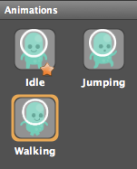
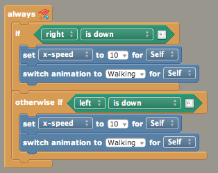
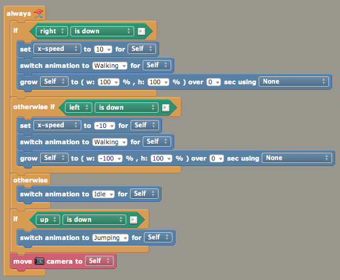

Creating the game:
Open Stencyl, click "Click here to create a new Game". There are lots of cool kits and things are available here, and I highly recommend you experiment with these at some point, but for now we want to keep it nice and simple, so choose Blank Game. This does exactly what it says on the tin, and creates a blank project to work in.
Make sure the game is set to 640x512.
As this is a tile-based game (similar to games like the 2D Mario ones), let's make our tilesheet first. The one I've provided in game_assets was made in photoshop, but as long as the tiles are the same number of pixels apart, it doesn't matter how you make them. Stencyl will accept any tile size, but 32x32 or 64x64 are typical sizes. For this game I've used 64x64. Here's what the sheet looks like:
In Stencyl, create a new Tilesheet from the Dashboard, and import the sheet.png file. Be sure to set the tilesize as 64x64 here. You should see the tiles chopped up properly in the preview. Save this tilesheet, and you're done with this part until later.
We're also going to use a repeating background pattern for the sky, as this will be a scrolling game. In the Breakout example we chose a fixed size as everything happens on a single screen, but for a game like this where the levels can be any size, we'll want to be a bit smarter. Create a background like usual from the Dashboard:

The important difference is that once the image is imported (note that it's very small, and should tesselate ideally), you'll need to tick the "Repeat background" box. This will make Stencyl tile the background as many times as is needed.
Now to make our game scene. Previously we didn't care about tile size, but now we're actually using tiles we need to get this bit right. Set the scene to be 10 tiles wide, and 8 tiles high, with a tile size of 64x64. This will create a scene where the tiles fit precisely into the screen (which is also why we set such a precise stage size at the beginning).
Now you can open your scene, open the "tiles" menu (next to the usual actors tab), and start painting with tiles! As we're so exact with our measurements, everything should snap together properly. Design a rough level with a bit of ground, so we can test our characters on it later:

To create our Player, create a new Actor from the Dashboard and call it Player. Our player will have a few states, but everything will be done in one actor. Create an "Idle" state in the same way we did before, and add the single idle image to it:
You can click the plus button in the bottom left corner of the screen to make a new state. Add a "Jumping" state with the single jumping frame in it:
Now add a third state, call it "Walking", and add the four walk cycle animation frames. Be sure to add them in the right order. You should see the little thumbnail animating with a preview of the walk cycle. It's worth noting that in the same way as scenes, one of your animations will be the default animation: this will be the state that displays when the item is added to the stage, so we'll want it to be "Idle" - it should be this already as you made it first.

Now, if you drop your player into the world, you'll notice he floats when you run the game:
To remedy this, go to the Physics tab in your game scene, and add some gravity. "85 down" is normal earth gravity. Test your game now, and gravity should kick in, and your guy should fall to the floor. Note that the tiles are already physics objects, so he should land on them:
To get our player moving around, we can create a behaviour for him:
First we'll add some left and right motion. Note that this is in an "update" event rather than a keypress, as we want to continually check if you're pressing a button:
We simply set the walk speed, and flick the animation to the walking state at the same time. Don't forget to add the behaviour to the player Actor!

Next we need to flip the player around if he walks to the left. This can be done using the "grow" block, to reduce the character's width to -100%. Because the character is centrally aligned, he'll flip cleanly over:
We can then add an extra little logic to return the player to an idle state if nothing's being pressed, and also to the jumping aniamtion if you're holding the jump button. This logic might need tweaking a little, but it'll do:
The actual jump command (as opposd to the animation change) is done in a keypress, as it only happens once. Make a new event in the same behaviour:
And add a very simple extra bit of logic to push the character upwards. This is a simple version, which at the moment doesn't check to see if the player is allowed to jump (in other words, you can jump infinitely!). This is an easy fix, just add a check to see if the player's Y speed is exactly zero, and only allow them to jump if this is true.
You may notice that the red platform tiles are only half a tile high, but still collide as though they're square (for example if a player jumps up underneath one, he'll bang his head in thin air instead of reaching the platform). To remedy this, you can make a custom collider in the tilesheet's collisions tab. Once you've created the new collider type, it can be applied to all of the red tiles so they're consistent:
Coins can be added as normal actors:
However, you will need to make sure that the coin actor has "Is a sensor?" ticked as true. This means that the coin will no longer be collided with (try the game without this setting turned on, you'll be able to walk on the coins!). If you change the hitbox on this screen too, the coin will only be picked up when you touch the actual coin part of the graphic, rather than the full tile:
The coin's logic can be kept in it's own behaviour. Add a collision detector for a specific actor type, and listen for Player collisions. You could always use "collides with anything" but this would also mean that anything else in the game can pick up coins too!
In the coin behaviour, just kill self and you're done. As always don't forget to add this behaviour to the coin actor!
Sounds can be imported as any other file can from the Dashboard. You may get a warning about metadata, this is fine:
Now you have your sound objects, you can play them in the Coin's behaviour...

...and the jump logic in the player's behaviour:
To add music, create a scene behaviour, and add the audio in an "on created" event (again be sure to actually attach the behaviour to the scene).
Make sure it's set to "loop" and not "play", or the sound will only play through once.
One of the cool things about tiles is that we can now make our game into a big scrolling platformer, rather than being confined to the screen. Go to the properties tab in the game scene, and pop the tile width out to something a bit larger:
The stage will automatically resize, so you can paint in some more level with tiles:
To get everything scrolling, all you need to do is add a camera follow block to the player logic. This will autmatically make the camera scroll with the player as you walk around, and it's even smart enough to stop at the edges of your scene (you may need to walk around a bit to confirm this has worked!!)
